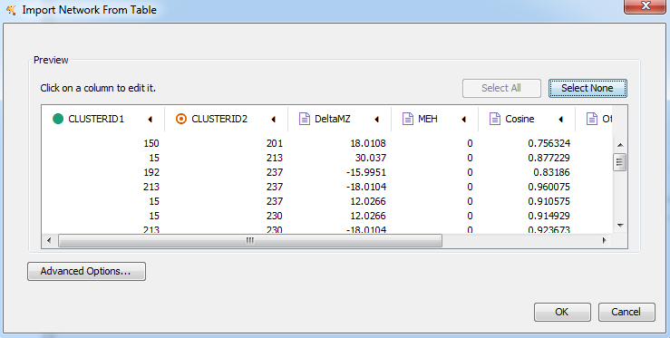
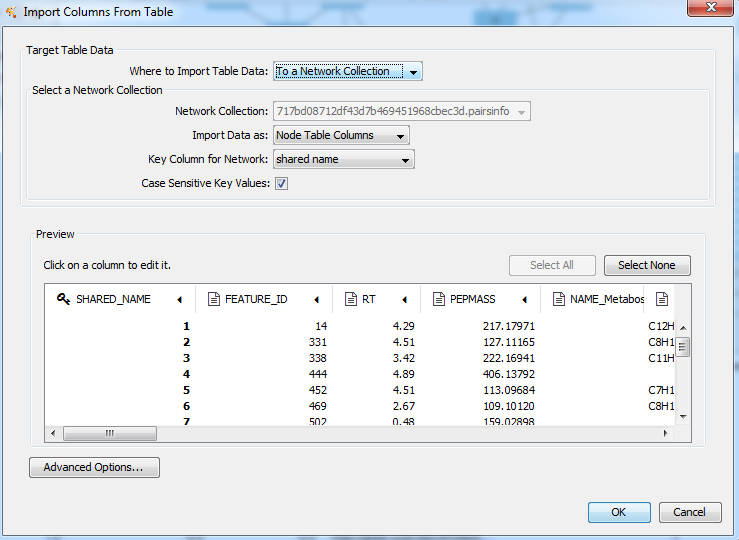
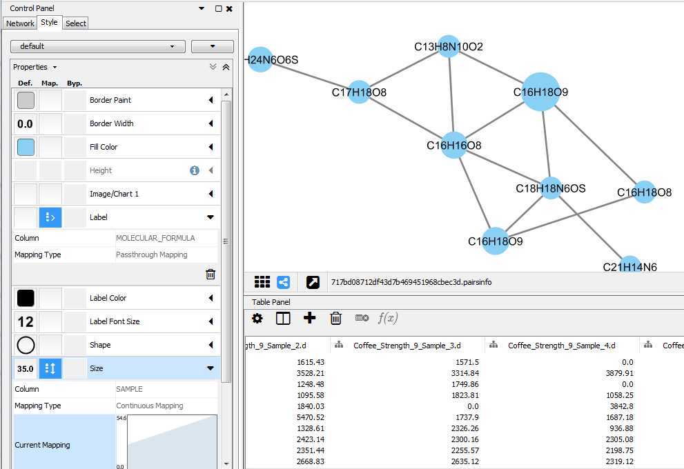
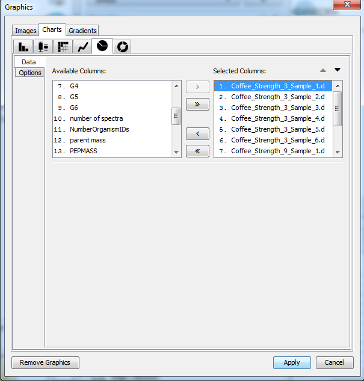
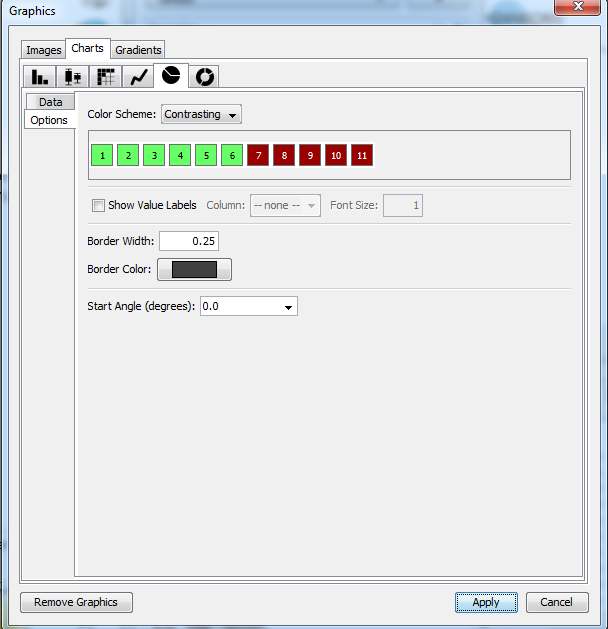
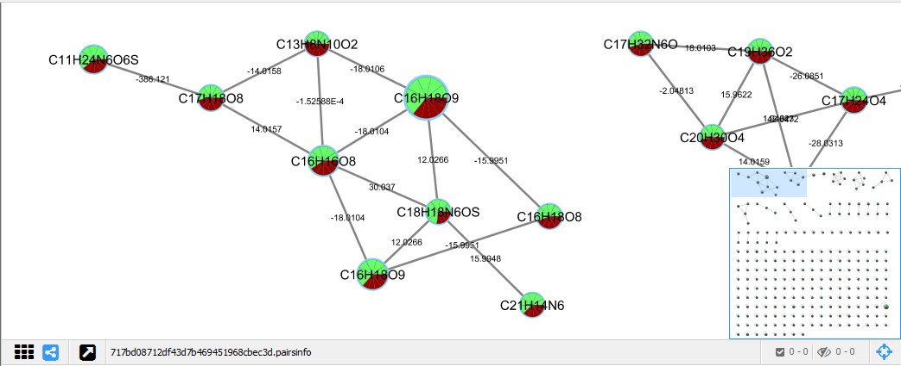
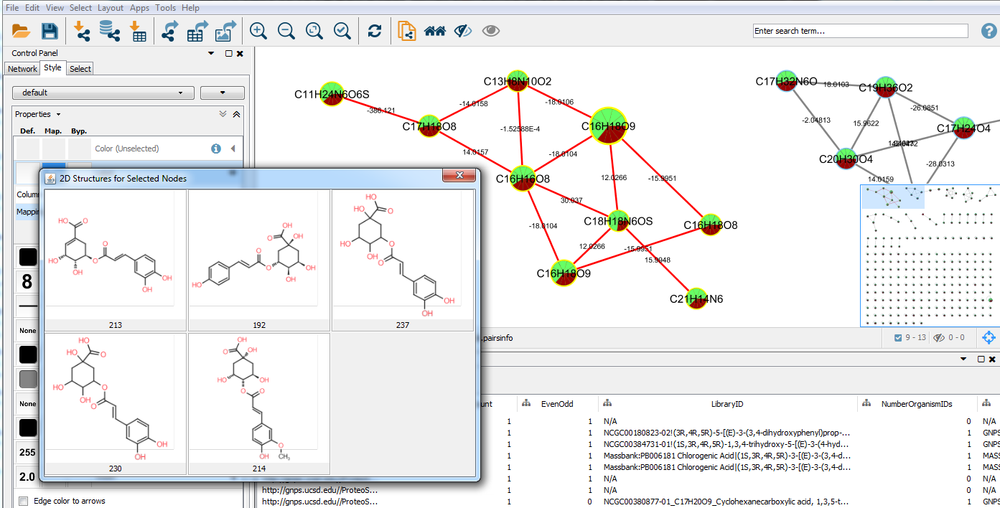
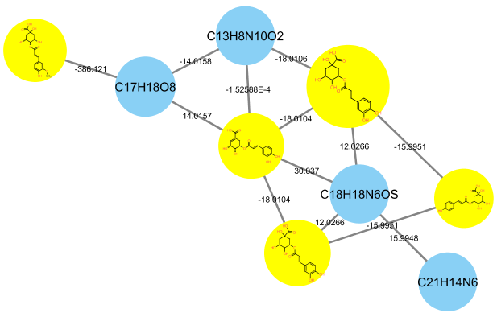

FBMN with MetaboScape - Coffee Analysis
Tutorial Using MetaboScape and GNPS¶
In this tutorial you will be guided into running MetaboScape for the Feature Based Molecular Network (FBMN) workflow on GNPS to reproduce some findings of the MetaboScape Coffee tutorial.
Learning Objectives¶
- Run MetaboScape feature detection on non-targeted LC-MS/MS data, and receive a feature quantification table and a MS2 spectral file as an output.
- Run GNPS and visualize MetaboScape annotation in Cytoscape.
Experimental Setup¶
We will use a subset of the LC-MS/MS analysis from the Coffee project.
MetaboScape will be used to perform feature detection and alignment and output a feature quantification table (.CSV file) and a MS/MS spectral file (.MGF format). The feature quantification table contains the intensity values for every aligned peak accross the samples, while the MS/MS spectral file contains a single MS/MS representing each aligned peak.
Data and Files Needed for the Tutorial¶
LC-MS/MS data and files are part of the MetaboScape tutorial project.
MetaboScape Representative Output Files¶
These files are not needed for the tutorial but are provided here as reference files, or if you want to bypass the MetaboScape processing.
| File Type | Download Link |
|---|---|
| Feature quantification table (.csv format) | Download |
| MS2 spectral file (.mgf format) | Download |
Required Software Installations¶
- MetaboScape, commercially available from Bruker.
- Cytoscape for advanced network visualization.
Process the data with MetaboScape¶
Refer to the detailed step-by-step procedure to run Metaboscape here.
Run FBMN on GNPS¶
See the FBMN documentation here.
Run Cytoscape¶
See the documentation to perform visualization of the molecular networking on the data of the Coffee Project here.
Visualization of Molecular Networks with Cytoscape¶
- Open Cytoscape 3.4 (or more recent version).
- Install the Cytoscape App ChemViz2 - http://apps.cytoscape.org/apps/chemviz2.
- Import the molecular networking files downloaded from GNPS into Cytoscape.
- Import the network topology. Go to File/Import/Network/File - select the .pairsinfo file in networkedges_selfloop folder.
- Import the node information table. Go to File/Import/Table/File - select the .tsv file in clusterinfosummarygroup_attributes_withIDs_withcomponentID folder.
- Import the MS/MS spectral library annotation table. Go to File/Import/Table/File - select the .tsv file in result_specnets_DB folder.
- Import the bucket table (MS/MS only) exported from MetaboScape. Go to File/Import/Table/File - select the .csv file.

Figure 1. Import the molecular network topology.

Figure 2. Node table import interface.
- Configure the Cytoscape style.
- For the Label properties. Select the column MOLECULAR_FORMULA and click Passthrough Mapping for the mapping type.
- For the Size properties. Select the column SAMPLE and click Continuous Mapping for the mapping type.

Figure 3. Configure the molecular network style.
- Visualizing the bucket table as a pie chart diagram. For the Image/Chart properties. Click on the Def. box.
- Click on the Charts spreadsheet, and select the group for visualization.
- Click on the option Charts/option spreadsheet, and select the color-code for each group.

Figure 4. Pie charts configuration. Data in Image/Chart properties.

Figure 5. Pie charts configuration. Options in Image/Chart properties.
- Visualize the MS/MS spectral library annotations (make sure ChemViz2 is installed).
- Select the nodes with MS/MS spectral library annotation (column LibraryID in the Cytoscape node table).
- Right click on the nodes and select /Apps/Cheminformatics/Show compounds table, or alternatively /Apps/Cheminformatics/Show structures for selected nodes or /Apps/Cheminformatics/Paint structures for selected nodes.

Figure 6. Molecular networks visualization with molecular formula annotation (node name).

Figure 7. View of compounds structures for spectral library MS/MS annotation in the molecular networks.

Figure 8. Molecular networks with MS/MS spectral annotation.
Page contributors¶
Louis Felix Nothias (UCSD), Tam Dang (Tech. Univ. Berlin), Kevin Ngoc (UCSD).